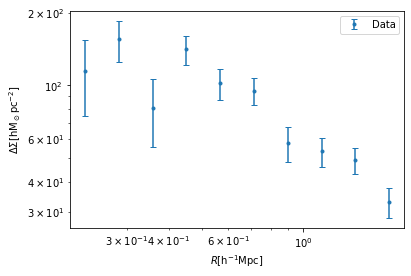

Day 5 Solutions
[1]:
#loading the required packages
%matplotlib inline
import pandas as pd
import numpy as np
import matplotlib.pyplot as plt
from scipy.spatial import cKDTree
from astropy.cosmology import FlatLambdaCDM
import glob
[2]:
def get_xyz(ra, dec):
ra = ra*np.pi/180.
dec = dec*np.pi/180.
x = np.cos(dec)*np.cos(ra)
y = np.cos(dec)*np.sin(ra)
z = np.sin(dec)
return x, y, z
[3]:
print(get_xyz(30,60))
(0.43301270189221946, 0.25, 0.8660254037844386)
[4]:
# selection cut on the lens sample
def lens_select(zmin=0.1, zmax=0.33, rsepmin=0.1, rsepmax=0.4):
#please check the file path properly
data = pd.read_csv('/home/idies/workspace/Storage/divyar/AstroTwin_Colo_2024/DataStore/redmapper_satellites.dat', delim_whitespace=1)
#sample selection cut
idx = (data['rsep[h-1Mpc]']>rsepmin) & (data['rsep[h-1Mpc]']<=rsepmax)
idx = idx & (data['zred']>zmin) & (data['zred']<=zmax)
ra = data['ra'].values[idx]
dec = data['dec'].values[idx]
zred = data['zred'].values[idx]
#as we have no weights to apply we set them to unity
wgt = ra*1.0/ra
print('number of lenses=%d'%len(ra))
return ra, dec, zred, wgt
# def lens_select(zmin=0.1, zmax=0.33, lammin=55, lammax=100):
# #please check the file path properly
# data = pd.read_csv('/home/idies/workspace/Storage/divyar/AstroTwin_Colo_2024/DataStore/redmapper.dat', delim_whitespace=1)
# #sample selection cut
# idx = (data['lambda']>lammin) & (data['lambda']<=lammax)
# idx = idx & (data['zred']>zmin) & (data['zred']<=zmax)
# ra = data['ra'].values[idx]
# dec = data['dec'].values[idx]
# zred = data['zred'].values[idx]
# #as we have no weights to apply we set them to unity
# wgt = ra*1.0/ra
# print('number of lenses=%d'%len(ra))
# return ra, dec, zred, wgt
[5]:
# sanity cheaks on the source files
def read_sources(ifil):
# various columns in sources
# ragal, decgal, e1gal, e2gal, wgal, rms_egal, mgal, c1gal, c2gal, R2gal, zphotgal
data = pd.read_csv(ifil, delim_whitespace=1).values
zphotgal = data[:,-1]
# sanity checks on the sources data
idx = (np.sum(np.isnan(data), axis=1)==0) & (zphotgal>0)
datagal = np.zeros((np.sum(idx),7))
datagal[:,:6] = data[idx,:6]
datagal[:,6] = data[idx,-1]
# collects only - ragal, decgal, e1gal, e2gal, wgal, rms_egal, zphotgal
return datagal
[6]:
# following surhud's lectures
def get_et(lra, ldec, sra, sdec, se1, se2):
lra = lra*np.pi/180
ldec = ldec*np.pi/180
sra = sra*np.pi/180
sdec = sdec*np.pi/180
c_theta = np.cos(ldec)*np.cos(sdec)*np.cos(lra - sra) + np.sin(ldec)*np.sin(sdec)
s_theta = np.sqrt(1-c_theta**2)
# phi to get the compute the tangential shear
c_phi = np.cos(ldec)*np.sin(sra - lra)*1.0/s_theta
s_phi = (-np.sin(ldec)*np.cos(sdec) + np.cos(ldec)*np.cos(sra - lra)*np.sin(sdec))*1.0/s_theta
# tangential shear
e_t = - se1*(2*c_phi**2 -1) - se2*(2*c_phi * s_phi)
return e_t
[7]:
print(get_et(lra=0, ldec=0, sra=0.123, sdec=0.045, se1 = 4.5e-2, se2 = 1.7e-2))
-0.04534629189830734
[8]:
def get_sigma_crit_inv(lzred, szred, cc):
# some important constants for the sigma crit computations
gee = 4.301e-9 #km^2 Mpc M_sun^-1 s^-2 gravitational constant
cee = 3e5 #km s^-1
# sigma_crit_calculations for a given lense-source pair
sigm_crit_inv = cc.angular_diameter_distance(lzred).value * cc.angular_diameter_distance_z1z2(lzred, szred).value * (1.0 + lzred)**2 * 1.0/cc.angular_diameter_distance(szred).value
sigm_crit_inv = sigm_crit_inv * 4*np.pi*gee*1.0/cee**2
sigm_crit_inv = 1e12*sigm_crit_inv #esd's are in pc not in Mpc
return sigm_crit_inv
[9]:
from astropy.cosmology import FlatLambdaCDM
cc = FlatLambdaCDM(H0=100, Om0=0.999)
print(get_sigma_crit_inv(lzred=0.33, szred=0.8, cc=cc))
0.00030436585298495184
[10]:
def run_pipe(Omegam=0.315, rmin=0.2, rmax=2.0, nbins=10, zdiff=0.4, outputfile = 'astrotwin_dsigma.dat'):
#set the cosmology with omegaM parameter
cc = FlatLambdaCDM(H0=100, Om0=Omegam) # fixing H0=100 to set units in Mpc h-1
# set the projected radial binning
rmin = rmin
rmax = rmax
nbins = nbins #10 radial bins for our case
rbins = np.logspace(np.log10(rmin), np.log10(rmax), nbins + 1)
rdiff = np.log10(rbins[1]*1.0/rbins[0])
# initializing arrays for signal compuations
sumdsig_num = np.zeros(len(rbins[:-1]))
sumdsigsq_num = np.zeros(len(rbins[:-1]))
sumwls = np.zeros(len(rbins[:-1]))
sumwls_resp = np.zeros(len(rbins[:-1]))
# getting the lenses data
lra, ldec, lred, lwgt = lens_select()
#lra, ldec, lred, lwgt = lens_select(zmin=0.1, zmax=0.33, lammin=55, lammax=100)
# convert lense ra and dec into x,y,z cartesian coordinates
lx, ly, lz = get_xyz(lra, ldec)
# putting kd tree around the lenses
lens_tree = cKDTree(np.array([lx, ly, lz]).T)
print('lenses tree is ready\n')
# setting maximum search radius
dcommin = cc.comoving_distance(np.min(lred)).value
dismax = (rmax*1.0/(dcommin))
# lets first catch the file list for sources
sflist = np.sort(glob.glob('/home/idies/workspace/Storage/divyar/AstroTwin_Colo_2024/DataStore/hsc/*.dat'))
# Ready to pounce on the source data
for ifil in sflist:
# catching the source data matrix
# please have a check for the columns names
datagal = read_sources(ifil)
Ngal = len(datagal[:,0]) # total number of galaxies in the source file
# first two entries are ra and dec for the sources
allragal = datagal[:,0]
alldecgal = datagal[:,1]
# ra and dec to x,y,z for sources
allsx, allsy, allsz = get_xyz(allragal, alldecgal)
# query in a ball around individual sources and collect the lenses ids with a maximum radius
slidx = lens_tree.query_ball_point(np.transpose([allsx, allsy, allsz]), dismax)
# various columns in sources
# ragal, decgal, e1gal, e2gal, wgal, rms_egal, mgal, c1gal, c2gal, R2gal, zphotgal
# looping over all the galaxies
for igal in range(Ngal):
ragal = datagal[igal,0]
decgal = datagal[igal,1]
e1gal = datagal[igal,2]
e2gal = datagal[igal,3]
wgal = datagal[igal,4]
rms_egal = datagal[igal,5]
zphotgal = datagal[igal,6]
# array of lenses indices
lidx = np.array(slidx[igal])
# removing sources which doesn't have any lenses around them
if len(lidx)==0:
continue
# selecting a cleaner background
zcut = (lred[lidx] < (zphotgal - zdiff)) #only taking the foreground lenses
# again skipping the onces which doesn't satisfy the above criteria
if np.sum(zcut)==0.0:
continue
# collecting the data of lenses around individual source
lidx = lidx[zcut] # this will catch the array indices for our lenses
sra = ragal
sdec = decgal
l_ra = lra[lidx]
l_dec = ldec[lidx]
l_zred = lred[lidx]
l_wgt = lwgt[lidx]
sx, sy, sz = get_xyz(sra,sdec) # individual galaxy ra,dec-->x,y,z
lx, ly, lz = get_xyz(l_ra,l_dec) # individual galaxy ra,dec-->x,y,z
# getting the radial separations for a lense source pair
sl_sep = np.sqrt((lx - sx)**2 + (ly - sy)**2 + (lz - sz)**2)
sl_sep = sl_sep * cc.comoving_distance(l_zred).value
for ll,sep in enumerate(sl_sep):
if sep<rmin or sep>rmax:
continue
rb = int(np.log10(sep*1.0/rmin)*1/rdiff)
# get tangantial components given positions and shapes
e_t = get_et(lra = l_ra[ll], ldec = l_dec[ll], sra = sra, sdec = sdec, se1 = e1gal, se2 = e2gal)
# sigma_crit_calculations for a given lense-source pair
sigm_crit_inv = get_sigma_crit_inv(l_zred[ll], zphotgal, cc)
# following equations given in the surhud's lectures
w_ls = l_wgt[ll] * wgal * (sigm_crit_inv)**2
w_ls_by_av_sigc_inv = l_wgt[ll] * wgal * sigm_crit_inv
# separate numerator and denominator computation
sumdsig_num[rb] += w_ls_by_av_sigc_inv * e_t
sumdsigsq_num[rb] += (w_ls_by_av_sigc_inv * e_t)**2
sumwls[rb] += w_ls
sumwls_resp[rb] += w_ls * (1-rms_egal**2)
print(ifil)
fout = open(outputfile, "w")
fout.write("# 0:rmin/2+rmax/2 1:DeltaSigma 2:SN_ErrDeltaSigma\n")
for i in range(len(rbins[:-1])):
rrmin = rbins[i]
rrmax = rbins[i+1]
Resp = sumwls_resp[i]*1.0/sumwls[i]
fout.write("%le\t%le\t%le\n"%(rrmin/2.0+rrmax/2.0, sumdsig_num[i]*1.0/sumwls[i]/2./Resp, np.sqrt(sumdsigsq_num[i])*1.0/sumwls[i]/2./Resp))
fout.write("#OK")
fout.close()
return 0
[1]:
#run_pipe(rmin=0.01,rmax=3, outputfile = '/home/idies/workspace/Storage/divyar/persistent/astrotwin_dsigma_satellite.dat')
[ ]:
dat = np.loadtxt('astrotwin_dsigma_satellite.dat')
plt.errorbar(dat[:,0], dat[:,1], yerr=dat[:,2], fmt='.', capsize=3, label='Data')
plt.legend()
plt.xlabel(r'$R[{\rm h^{-1}Mpc}]$')
plt.ylabel(r'$\Delta\Sigma [{\rm h M_\odot pc^{-2}}]$')
plt.xscale('log')
plt.yscale('log')
[12]:
dat = np.loadtxt('astrotwin_dsigma.dat')
plt.errorbar(dat[:,0], dat[:,1], yerr=dat[:,2], fmt='.', capsize=3, label='Data')
plt.legend()
plt.xlabel(r'$R[{\rm h^{-1}Mpc}]$')
plt.ylabel(r'$\Delta\Sigma [{\rm h M_\odot pc^{-2}}]$')
plt.xscale('log')
plt.yscale('log')

modelling part
[ ]:
import numpy as np
import matplotlib.pyplot as plt
from scipy.integrate import quad
from scipy.interpolate import interp1d
class constants:
"""Useful constants"""
G = 4.301e-9 #km^2 Mpc M_sun^-1 s^-2 gravitational constant
H0 = 100. #h kms-1 Mpc-1 hubble constant at present
omg_m = 0.315 #omega_matter
not_so_tiny = 1e-24
class halo(constants):
"""Useful functions for weak lensing signal modelling"""
def __init__(self,m_tot,con_par):
self.m_tot = m_tot # total mass of the halo
self.c = con_par # concentration parameter
self.rho_crt = 3*self.H0**2/(8*np.pi*self.G) # rho critical
print(self.rho_crt*self.omg_m)
self.r_200 = (3*m_tot/(4*np.pi*200*self.rho_crt*self.omg_m))**(1./3.) # radius defines size of the halo
self.rho_0 = con_par**3 *m_tot/(4*np.pi*self.r_200**3 *(np.log(1.0+con_par)-con_par/(1.0+con_par)))
self.init_sigma = False
self.init_sigma_cir = False
self.sigma_cir_dict = {}
print(("Intialing NFW parameters\n m_tot = %s M_sun\nconc_parm = %s\nrho_0 = %s M_sun/Mpc^3\n r_s = %s Mpc"%(m_tot,con_par,self.rho_0,self.r_200/self.c)))
def nfw(self,r):
"""given r, this gives nfw profile as per the instantiated parameters"""
r_s = self.r_200/self.c
value = self.rho_0/((r/r_s)*(1+r/r_s)**2)
return value
def sigma(self, r):
r_s = self.r_200/self.c
k = 2*r_s*self.rho_0
if np.isscalar(r):
r = np.array([r])
sig = 0.0*r
c=0
for i in r:
x = i/r_s
if x < 1:
value = (1 - np.arccosh(1/x)/np.sqrt(1-x**2))/(x**2-1)
elif x > 1:
value = (1 - np.arccos(1/x)/np.sqrt(x**2-1))/(x**2-1)
else:
value = 1./3.
sig[c] = value*k
c=c+1
return sig
def avg_sigma_nfw(self,r):
r_s = self.r_200/self.c
k = 2*r_s*self.rho_0
c=0
if np.isscalar(r):
r = np.array([r])
sig = 0.0*r
for i in r:
x = i/r_s
if x < 1:
value = np.arccosh(1/x)/np.sqrt(1-x**2) + np.log(x/2.0)
value = value*2.0/x**2
elif x > 1:
value = np.arccos(1/x)/np.sqrt(x**2-1) + np.log(x/2.0)
value = value*2.0/x**2
else:
value = 2*(1-np.log(2))
sig[c] = value*k
c=c+1
return sig
def delta_sigma(self,r):
"""difference between mean sigma and average over the circle of radius R"""
val = self.avg_sigma_nfw(r) - self.sigma(r)
return val
"""segment for the parent halo contribution for the daughter halo at distance r0"""
def sigma_cir(self,r,r0):
"""sigma mean over a circle using the spline given below"""
if not self.init_sigma_cir:
self.init_sigma_cir_spl(r0)
if r > self.sigma_cir_dict["Rmax"]:
value = quad(lambda j: self.sigma(np.sqrt(r0**2 + r**2 + 2*r0*r*np.cos(j))), 0., 2*np.pi)[0]/(2*np.pi)
elif r < self.sigma_cir_dict["Rmin"]:
value = self.sigma_cir_dict["Sigmamin"]
else:
value = 10**self.sig_cir_spl(np.log10(r))
return value
def init_sigma_cir_spl(self,r0):
"""spline for the satellite at a distance r0 from the center for parents contribution averaged over a circle"""
print("SPLINE READY FOR AVERAGING OVER CIRCLE")
rdbin = np.logspace(-3,np.log10(10*self.r_200),50)
des_cir = 0.0*rdbin
for i in range(0,len(rdbin)):
des_cir[i] = quad(lambda j: self.sigma(np.sqrt(r0**2 + rdbin[i]**2 + 2*r0*rdbin[i]*np.cos(j))), 0., 2*np.pi)[0]/(2*np.pi)
self.sig_cir_spl = interp1d(np.log10(rdbin), np.log10(des_cir),kind = "cubic")
self.sigma_cir_dict["Rmax"] = rdbin[-1]
self.sigma_cir_dict["Rmin"] = rdbin[0]
self.sigma_cir_dict["Sigmamin"] = des_cir[0]
self.init_sigma_cir = True
return
def delta_sigma_dau(self,r,r0):
value = 2*np.pi*quad(lambda rp: rp*self.sigma_cir(rp,r0), 0.0, r)[0]/(np.pi*r**2) - self.sigma_cir(r,r0)
#value = self.sigma_cir(r,r0)
return value
if __name__ == "__main__":
def proj_sat_profile(R):
"assumed dummy profile"
return 1/R**2
rdbin = np.logspace(-2,np.log10(5),50)
mhpart = 1e14
mhdaut = 1e12
msteldaut = 1e10
h_p = halo(mhpart,4)
h_d = halo(mhdaut,4)
rd_dist = 0.3
rsepmin = 0.1
rsepmax = 0.6
delta_part = 0.0*rdbin
for i in range(len(rdbin)):
#delta_part[i] = h_p.delta_sigma_dau(rdbin[i], rd_dist)
ans = quad(lambda rsep: proj_sat_profile(rsep) *h_p.delta_sigma_dau(rdbin[i], rsep), rsepmin, rsepmax)[0]
delta_part[i] = ans/quad(lambda rsep: proj_sat_profile(rsep), rsepmin, rsepmax)[0]
plt.subplot(2,2,1)
plt.plot(rdbin,delta_part/1e12,'-', label = 'Parent')
plt.plot(rdbin,(h_d.delta_sigma(rdbin) + msteldaut/(np.pi*rdbin**2))/1e12,'-', label = 'Daughter')
plt.plot(rdbin,(delta_part + msteldaut/(np.pi*rdbin**2) + h_d.delta_sigma(rdbin))/1e12,'-', label = 'Total')
plt.xscale('log')
plt.legend()
plt.axhline(0.0, ls='--',color='grey')
plt.axvline(rd_dist, color='black')
plt.xlabel(r'$R [{ \rm h^{-1}Mpc}]$')
plt.ylabel(r'$\Delta \Sigma [{\rm h M_\odot pc^{-2}}]$')
plt.savefig('test.png', dpi=300)